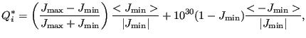
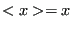
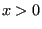
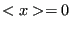
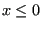

Next: smoothingmidnodes.f Up: Mesh refining procedure Previous: searchmidneigh.f Contents
Recall that the smoothed position of a vertex node is only accepted if the
quality of its ball did not get worse. In analogy, the smoothed position of a
midnode will only be accepted if the quality of its shell does not get
worse. For the quality measure of a quadratic element the largest difference of the
Jacobian determinant at the integration points will be taken as
measure. Recall that the 10-node tetrahedral element has 4 integration
points. The quality of quadratic element  is now defined as:
is now defined as:
 |
(991) |
where    